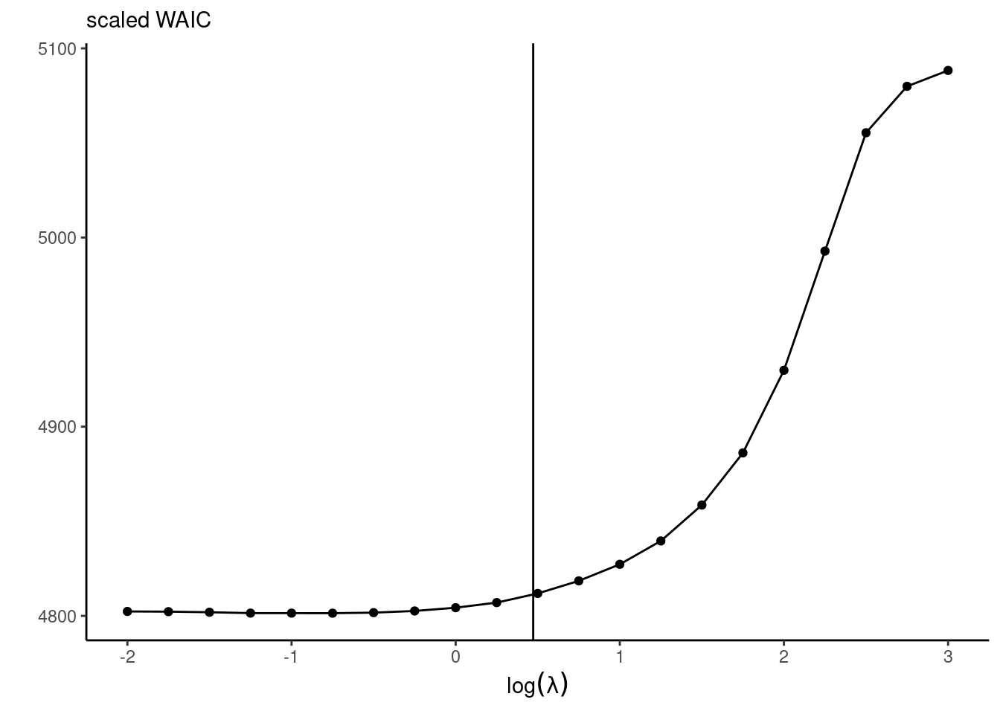
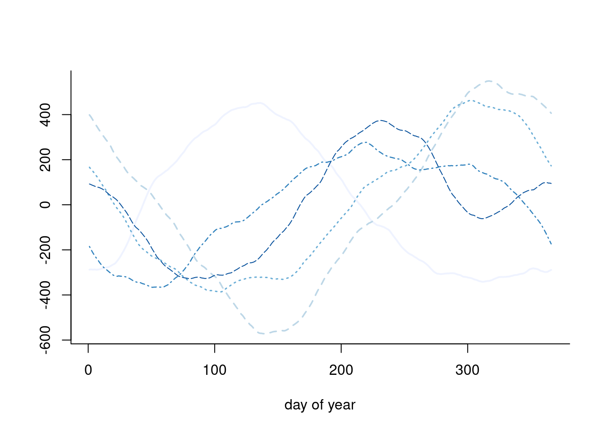
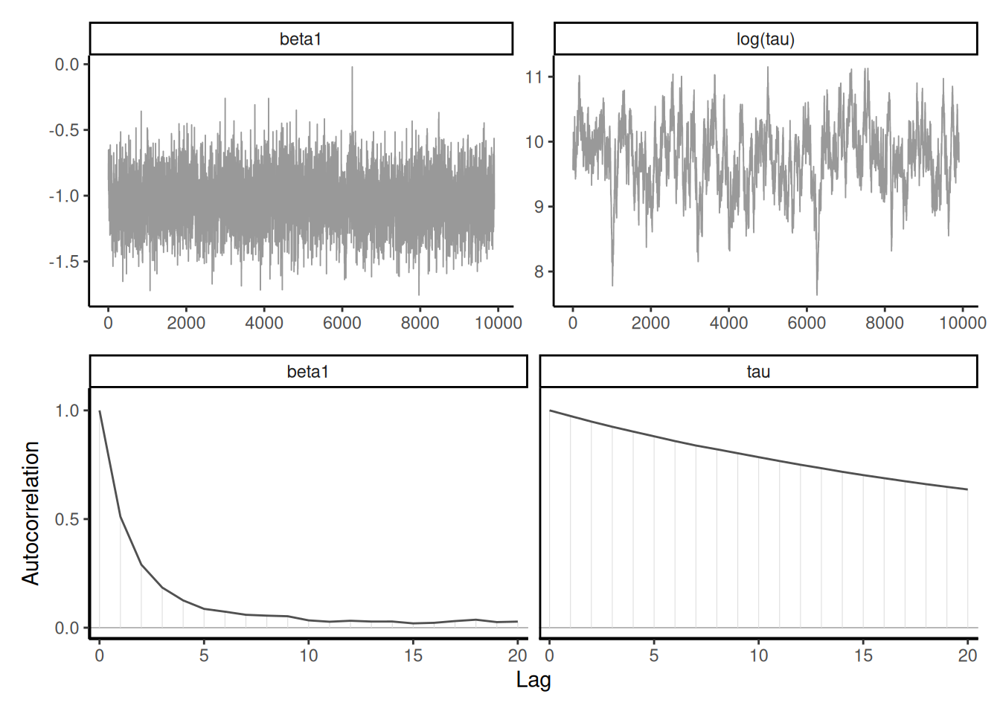
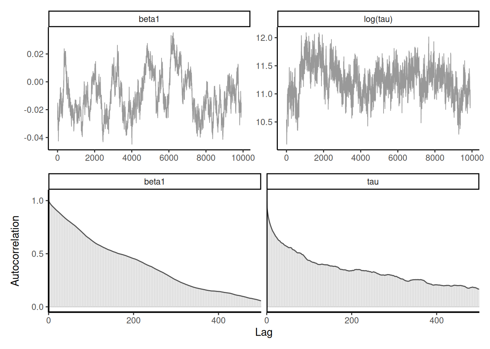

7 Computational strategies and diagnostics
The Bayesian workflow is a coherent framework for model formulation construction, inference and validation. It typically involves trying and comparing different models, adapting and modifying these models (Gelman et al. 2020); see also Michael Betancourt for excellent visualizations. In this chapter, we focus on three aspects of the workflow: model validation, evaluation and comparison.
Learning objectives:
At the end of the chapter, students should be able to
- use output of MCMC to obtain estimates and standard errors.
- choose suitable test statistics to evaluate model adequacy.
- assess convergence using graphical tools and effective sample size.
- perform model comparisons using Bayes factor or predictive measures.
- diagnose performance of MCMC algorithms (in terms of mixing and effective sample size).
- implement strategies to improve sampling performance, including block updates, reparametrization and marginalization.
For a given problem, there are many different Markov chain Monte Carlo algorithms that one can implement: they will typically be distinguished based on the running time per iteration and the efficiency of the samplers, with algorithms providing realizations of Markov chains with lower autocorrelation being preferred. Many visual diagnostics and standard tests can be used to diagnose lack of convergence, or inefficiency. The purpose of this section is to review these in turn, and to go over tricks that can improve mixing.
Generating artificial data: Some problems and checks relate to models and the correct implementations (of the algorithms). Sometimes, the probabilistic procedure will generate draws, but it’s unclear whether our numerical implementation is correct. We can sometimes see this if the output is truly misleading, but it’s not always obvious. We can for example generate an “artificial” or fake data set from the model with some fixed parameter inputs to see if we can recover the parameter values used to generate these within some credible set.
Many such sanity checks can be implemented by means of simulations. Consider prior predictive checks: if the prior has a distribution from which we can generate, we can obtain prior draws from \(p(\boldsymbol{\theta})\), generate data from the prior predictive \(p(y \mid \boldsymbol{\theta})\) by simulating new observations from the data generating mechanism of the likelihood, and use these to obtain prior predictive by removing the likelihood component altogether: the draws from the prior predictive should then match posterior draws with only the prior.
The “data-averaged posterior” is obtained upon noting that (Geweke 2004) \[\begin{align*} p(\boldsymbol{\theta}) = \int \int_{\boldsymbol{\Theta}} p( \boldsymbol{\theta} \mid \boldsymbol{y}) p(\boldsymbol{y} \mid \widetilde{\boldsymbol{\theta}}) p(\widetilde{\boldsymbol{\theta}}) \mathrm{d} \widetilde{\boldsymbol{\theta}} \mathrm{d} \boldsymbol{y} \end{align*}\] by forward sampling first the prior, than data for this particular value and obtaining the posterior associated with the latter.
We can test that our sampling algorithm correctly samples from the posterior distribution of interest by running the following procedure, which is however computationally intensive.
Proposition 7.1 (Simulation based calibration) Simulation-based calibration (Talts et al. 2020) proceeds with, in order
- \(\boldsymbol{\theta}_0 \sim p(\boldsymbol{\theta}),\)
- \(\boldsymbol{y}_0 \sim p(\boldsymbol{y} \mid \boldsymbol{\theta}_0),\)
- \(\boldsymbol{\theta}_1, \ldots, \boldsymbol{\theta}_B \sim p(\boldsymbol{\theta} \mid \boldsymbol{y}_0 ).\)
Conditional on the simulated \(\boldsymbol{y}\), the distribution of \(\boldsymbol{\theta}_0\) is the same as that of \(\boldsymbol{\theta}_1, \ldots, \boldsymbol{\theta}_B.\) We do a dimension reduction step taking the test function \(t(\cdot)\) to get the rank of the prior draw among the posterior ones, breaking ties at random if any. In the absence of ties, \[\begin{align*} T = \sum_{b=1}^B \mathrm{I}\{t(\boldsymbol{\theta}_b, \boldsymbol{y}) < t(\boldsymbol{\theta}_0,\boldsymbol{y})\}, \end{align*}\]
These steps are repeated \(K\) times, yielding \(K\) test functions \(T_1, \ldots, T_K.\) We then test for uniformity using results from Säilynoja, Bürkner, and Vehtari (2022).
7.1 Convergence diagnostics and model validation
Many diagnostics rely on running multiple Markov chains for the same problem, with different starting values. In practice, it is more efficient to run a single long chain than multiple chains, because of the additional computational overhead related to burn in and warmup period. Running multiple chains however has the benefit of allowing one to compute diagnostics of convergence (by comparing chains) such as \(\widehat{R},\) and to detect local modes.
Definition 7.1 (Trace plots) A trace plot is a line plot of the Markov chain as a function of the number of iterations. It should be stable around some values if the posterior is unimodal and the chain has reached stationarity. The ideal shape is that of a ‘fat hairy catterpilar’.
It is useful to inspect visually the Markov chain, as it may indicate several problems. If the chain drifts around without stabilizing around the posterior mode, then we can suspect that it hasn’t reached it’s stationary distribution (likely due to poor starting values). In such cases, we need to disregard the dubious draws from the chain by discarding the so-called warm up or burn in period. While there are some guarantees of convergence in the long term, silly starting values may translate into tens of thousands of iterations lost wandering around in regions with low posterior mass. Preliminary optimization and plausible starting values help alleviate these problems. Figure 7.1 shows the effect of bad starting values on a toy problem where convergence to the mode is relatively fast. If the proposal is in a flat region of the space, it can wander around for a very long time before converging to the stationary distribution.
Definition 7.2 (Trace rank plot) If we run several chains, as in Figure 7.1, with different starting values, we can monitor convergence by checking whether these chains converge to the same target. A trace rank plot compares the rank of the values of the different chain at a given iteration: with good mixing, the ranks should switch frequently and be distributed uniformly across integers.
A trace rank plot is shown on right panel of Figure 7.1.
Definition 7.3 (Burn in period) We term “burn in” the initial steps of the MCMC algorithm that are discarded because the chain has not reached it’s stationary distribution, due to poor starting values. , but visual inspection using a trace plot may show that it is necessary to remove additional observations.
Most software will remove the first \(N\) initial values (typically one thousand). Good starting values can reduce the need for a long burn in period. If visual inspection of the chains reveal that some of the chains for one or more parameters are not stationary until some iteration, we will discard all of these in addition. Geweke (1992)’s test measure whether the distribution of the resulting Markov chain is the same at the beginning and at the end through a test of equality of means.
Definition 7.4 (Warmup) Warmup period refers to the initial sampling phase (potentially overlapping with burn in period) during which proposals are tuned (for example, by changing the variance proposal to ensure good acceptance rate or for Hamiltonian Monte Carlo (HMC) to tune the size of the leapfrog. These initial steps should be disregarded.
The target of inference is a functional (i.e., one-dimensional summaries of the chain): we need to have convergence of the latter, but also sufficient effective sample size for our averages to be accurate (at least to two significant digits).
To illustrate these, we revisit the model from Example 3.15 with a penalized complexity prior for the individual effect \(\alpha_i\) and vague normal priors. We also fit a simple Poisson model with only the fixed effect, taking \(Y_{ij} \sim \mathsf{Poisson}\{\exp(\beta_j)\}\) with \(\beta_j \sim \mathsf{Gauss}(0,100)\). This model has too little variability relative to the observations and fits poorly as is.
For the Poisson example, the effective sample size for the \(\boldsymbol{\beta}\) for the multilevel model is a bit higher than 1000 with \(B=5000\) iterations, whereas we have for the simple naive model is \(1.028\times 10^{4}\) for \(B=10000\) draws, suggesting superefficient sampling. The dependency between \(\boldsymbol{\alpha}\) and \(\boldsymbol{\beta}\) is responsible for the drop in accuracy.
The coda (convergence diagnosis and output analysis) R package (Plummer et al. 2006) contains many tests. For example, the Geweke \(Z\)-score compares the averages for the beginning and the end of the chain: rejection of the null implies lack of convergence, or poor mixing.
Running multiple Markov chains can be useful for diagnostics.
Proposition 7.2 (Gelman–Rubin diagnostic) The Gelman–Rubin diagnostic \(\widehat{R},\) introduced in Gelman and Rubin (1992) and also called potential scale reduction statistic, is obtained by considering the difference between within-chains and between-chains variance. Suppose we run \(M\) chains for \(B\) iterations, post burn in. Denoting by \(\theta_{bm}\) the \(b\)th draw of the \(m\)th chain, we compute the global average \(\overline{\theta} = B^{-1}M^{-1}\sum_{b=1}^B \sum_{m=1}^m \theta_{bm}\) and similarly the chain sample average and variances, respectively \(\overline{\theta}_m\) and \(\widehat{\sigma}^2_m\) (\(m=1, \ldots, M\)). The between-chain variance and within-chain variance estimator are \[\begin{align*} \mathsf{Va}_{\text{between}} &= \frac{B}{M-1}\sum_{m=1}^M (\overline{\theta}_m - \overline{\theta})^2\\ \mathsf{Va}_{\text{within}} &= \frac{1}{M}\sum_{m=1}^M \widehat{\sigma}^2_m \end{align*}\] and we can compute \[\begin{align*} \widehat{R} = \left(\frac{\mathsf{Va}_{\text{within}}(B-1) + \mathsf{Va}_{\text{between}}}{B\mathsf{Va}_{\text{within}}}\right)^{1/2} \end{align*}\] The potential scale reduction statistic must be, by construction, larger than 1 in large sample. Any value larger than this is indicative of problems of convergence. While the Gelman–Rubin diagnostic is frequently reported, and any value larger than 1 deemed problematic, it is not enough to have approximately \(\widehat{R}=1\) to guarantee convergence, but large values are usually indication of something being amiss. Figure 7.2 shows two instances where the chains are visually very far from having the same average and this is reflected by the large values of \(\widehat{R}.\)
Generally, it is preferable to run a single chain for a longer period than run multiple chains sequentially, as there is a cost to initializing multiple times with different starting values since we must discard initial draws. With parallel computations, multiple chains are more frequent nowadays.
Definition 7.5 (Thinning) MCMC algorithms are often run thinning the chain (i.e., keeping only a fraction of the samples drawn, typically every \(k\) iteration). This is wasteful as we can of course get more precise estimates by keeping all posterior draws, whether correlated or not. The only argument in favor of thinning is limited storage capacity: if we run very long chains in a model with hundreds of parameters, we may run out of memory.
7.1.1 Posterior predictive checks
Posterior predictive checks can be used to compare models of varying complexity.One of the visual diagnostics, outlined in Gabry et al. (2019), consists in computing a summary statistic of interest from the posterior predictive (whether mean, median, quantile, skewness, etc.) which is relevant for the problem at hand and which we hope our model can adequately capture. These should be salient features of the data, and may reveal inadequate likelihood or prior information.
Suppose we have \(B\) draws from the posterior and simulate for each \(n\) observations from the posterior predictive \(p(\widetilde{\boldsymbol{y}} \mid \boldsymbol{y})\): we can benchmark summary statistics from our original data \(\boldsymbol{y}\) with the posterior predictive copies \(\widetilde{\boldsymbol{y}}_b.\) Figure 7.3 shows this for the two competing models and highlight the fact that the simpler model is not dispersed enough. Even the more complex model struggles to capture this additional heterogeneity with the additional variables. One could go back to the drawing board and consider a negative binomial model.

7.2 Information criteria
The widely applicable information criterion (Watanabe 2010) is a measure of predictive performance that approximates the cross-validation loss. Consider first the log pointwise predictive density, defined as the expected value over the posterior distribution \(p(\boldsymbol{\theta} \mid \boldsymbol{y}),\) \[\begin{align*} \mathsf{LPPD}_i = \mathsf{E}_{\boldsymbol{\theta} \mid \boldsymbol{y}} \left\{ \log p(y_i \mid \boldsymbol{\theta})\right\}. \end{align*}\] The higher the value of the predictive density \(\mathsf{LPPD}_i,\) the better the fit for that observation.
As in general information criteria, we sum over all observations, adding a penalization factor that approximates the effective number of parameters in the model, with \[\begin{align*} n\mathsf{WAIC} = -\sum_{i=1}^n \mathsf{LPPD}_i + \sum_{i=1}^n \mathsf{Va}_{\boldsymbol{\theta} \mid \boldsymbol{y}}\{\log p(y_i \mid \boldsymbol{\theta})\} \end{align*}\] where we use again the empirical variance to compute the rightmost term. When comparing competing models, we can rely on their values of \(\mathsf{WAIC}\) to discriminate about the predictive performance. To compute \(\mathsf{WAIC},\) we need to store the values of the log density of each observation, or at least minimally compute the running mean and variance accurately pointwise at storage cost \(\mathrm{O}(n).\) Note that Section 7.2 of Gelman et al. (2013) define the widely applicable information criterion as \(2n \times \mathsf{WAIC}\) to make on par with other information criteria, which are defined typically on the deviance scale and so that lower values correspond to higher predictive performance.
An older criterion which has somewhat fallen out of fashion is the deviance information criterion of Spiegelhalter et al. (2002). It is defined as \[\begin{align*} \mathsf{DIC} = -2 \ell(\widetilde{\boldsymbol{\theta}}) + 2 p_D \end{align*}\] where \(p_D\) is the posterior expectation of the deviance relative to the point estimator of the parameter \(\widetilde{\boldsymbol{\theta}}\) (e.g., the maximum a posteriori or the posterior mean) \[\begin{align*} p_D = \mathsf{E}\{D(\boldsymbol{\theta}, \widetilde{\boldsymbol{\theta}}) \mid \boldsymbol{y}\}= \int 2 \{ \ell(\widetilde{\boldsymbol{\theta}}) - \ell(\boldsymbol{\theta})\} f(\boldsymbol{\theta} \mid \boldsymbol{y}) \mathrm{d} \boldsymbol{\theta} \end{align*}\] The DIC can be easily evaluated by keeping track of the log likelihood evaluated at each posterior draw from a Markov chain Monte Carlo algorithm. The penalty term \(p_D\) is however not invariant to reparametrizations. Assuming we can derive a multivariate Gaussian approximation to the MLE under suitable regularity conditions, the \(\mathsf{DIC}\) is equivalent in large samples to \(\mathsf{AIC}.\) The \(\mathsf{DIC}\) is considered by many authors as not being a Bayesian procedure; see Spiegelhalter et al. (2014) and the discussion therein.
Criteria such as \(\mathsf{LPPD}\) and therefore \(\mathsf{WAIC}\) require some form of exchangeability, and don’t apply to cases where leave-one-out cross validation isn’t adequate, for example in spatio-temporal models.
Example 7.1 (Information criteria for smartwatch and Bayesian LASSO) For the smartwatch model, we get a value of 3.07 for the complex model and 4.5: this suggests an improvement in using individual-specific effects.
#' WAIC
#' @param loglik_pt B by n matrix of pointwise log likelihood
WAIC <- function(loglik_pt){
-mean(apply(loglik_pt, 2, mean)) + mean(apply(loglik_pt, 2, var))
}We can also look at the predictive performance. For the diabetes data application with the Bayesian LASSO with fixed \(\lambda,\) the predictive performance is a trade-off between the effective number of parameter (with larger penalties translating into smaller number of parameters) and the goodness-of-fit. Figure 7.4 shows that the decrease in predictive performance is severe when estimates are shrunk towards 0, but the model performs equally well for small penalties.

Ideally, one would measure the predictive performance using the leave-one-out predictive distribution for observation \(i\) given all the rest, \(p(y_i \mid \boldsymbol{y}_{-i}),\) to avoid double dipping — the latter is computationally intractable because it would require running \(n\) Markov chains with \(n-1\) observations each, but we can get a good approximation using importance sampling. The loo package uses this with generalized Pareto smoothing to avoid overly large weights.
Once we have the collection of estimated \(p(y_i \mid \boldsymbol{y}_{-i}),\) we can assess the probability level of each observation. This gives us a set of values which should be approximately uniform if the model was perfectly calibrated. The probability of seeing an outcome as extreme as \(y_i\) can be obtained by simulating draws from the posterior predictive given \(\boldsymbol{y}_{-i}\) and computing the scaled rank of the original observation. Values close to zero or one may indicate outliers.

7.3 Computational strategies
The data augmentation strategies considered in Section 6.1 helps to simplify the likelihood and thereby reduce the cost of each iteration. However, latent variables are imputed conditional on current parameter values \(\boldsymbol{\theta}_a\): the higher the number of variables, the more the model will concentrate around current values of \(\boldsymbol{\theta}_a\), which leads to slow mixing.
There are two main strategies to deal with this problem: blocking the random effects together and simulating them jointly to improve mixing, and marginalizing out over some of the latent variables.
Example 7.2 (Marginalization in Gaussian models) To illustrate this fact, consider a hierarchical Gaussian model of the form \[\begin{align*} \boldsymbol{Y} = \mathbf{X}\boldsymbol{\beta} + \mathbf{Z}\boldsymbol{B} + \boldsymbol{\varepsilon} \end{align*}\] where \(\mathbf{X}\) is an \(n \times p\) design matrix with centered inputs, \(\boldsymbol{\beta} \sim \mathsf{Gauss}(\boldsymbol{0}_p, \sigma^2\mathbf{I}_p),\) \(\boldsymbol{B}\sim \mathsf{Gauss}_q(\boldsymbol{0}_q, \boldsymbol{\Omega})\) are random effects and \(\boldsymbol{\varepsilon} \sim \mathsf{Gauss}_n(\boldsymbol{0}_n, \kappa^2\mathbf{I}_n)\) are independent white noise.
We can write \[\begin{align*} \boldsymbol{Y} \mid \mathbf{\beta}, \boldsymbol{B} &\sim \mathsf{Gauss}_n(\mathbf{X}\boldsymbol{\beta} + \mathbf{Z}\boldsymbol{B}, \sigma^2\mathbf{I}_p)\\ \boldsymbol{Y} \mid \mathbf{\beta} &\sim \mathsf{Gauss}_n(\mathbf{X}\boldsymbol{\beta}, \mathbf{Q}^{-1}), \end{align*}\] where the second line corresponds to marginalizing out the random effects \(\boldsymbol{B}.\) This reduces the number of parameters to draw, but the likelihood evaluation is more costly due to \(\mathbf{Q}^{-1}\). If, as is often the case, \(\boldsymbol{\Omega}^{-1}\) and \(\mathbf{Z}\) are sparse matrices, the full precision matrix can be efficiently computed using Shermann–Morisson–Woodbury identity as \[\begin{align*} \mathbf{Q}^{-1} &= \mathbf{Z}\boldsymbol{\Omega}^{-1}\mathbf{Z}^\top + \kappa^2 \mathbf{I}_n,\\ \kappa^2\mathbf{Q} & = \mathbf{I}_n - \mathbf{Z} \boldsymbol{G}^{-1} \mathbf{Z}^\top,\\ \boldsymbol{G} &= \mathbf{Z}^\top\mathbf{Z} + \kappa^2 \boldsymbol{\Omega}^{-1} \end{align*}\] Section 3.1 of Nychka et al. (2015) details efficient ways of calculating the quadratic form involving \(\mathbf{Q}\) and it’s determinant.
Proposition 7.3 (Pseudo marginal) Another option proposed by Andrieu and Roberts (2009) based on an original idea from Beaumont (2003) relies on pseudo marginalization, where integration is done via Monte Carlo sampling. Specifically, suppose that we are ultimately interested in \[p(\boldsymbol{\theta})= \int p(\boldsymbol{\theta}, \boldsymbol{z}) \mathrm{d} \boldsymbol{z},\] but that for this purpose we normally sample from both parameters. Given a proposal \(\boldsymbol{\theta}\) and \(q_1(\boldsymbol{\theta})\) and subsequently \(L\) draws once from \(q_2(\boldsymbol{z} \mid \boldsymbol{\theta})\) for the nuisance, we can approximate the marginal using, e.g., importance sampling as \[\begin{align*} \widehat{p}(\boldsymbol{\theta}; \boldsymbol{z}) = \frac{1}{L} \sum_{l=1}^L \frac{p(\boldsymbol{\theta}, \boldsymbol{z}_l)}{q_2(\boldsymbol{z}_l, \boldsymbol{\theta})}. \end{align*}\] We then run a Markov chain on an augmented state space \(\boldsymbol{\Theta} \times \mathcal{Z}^L\), with Metropolis–Hastings acceptance ratio of \[\begin{align*} \frac{\widehat{p}(\boldsymbol{\theta}^{\star}; \boldsymbol{z}_{1,t}^{\star}, \boldsymbol{z}_{L,t}^{\star})}{ \widehat{p}(\boldsymbol{\theta}_t; \boldsymbol{z}_{1,t-1}, \ldots, \boldsymbol{z}_{L, t-1})}\frac{q_1(\boldsymbol{\theta}_{t-1} \mid \boldsymbol{\theta}^{\star}_t)}{q_1(\boldsymbol{\theta}^{\star}_t \mid \boldsymbol{\theta}_{t-1})}. \end{align*}\] Note that the terms involving \(\prod_{l=1}^L q_2(\boldsymbol{z}_{l}; \boldsymbol{\theta})\) do not appear because they cancel out, as they are also part of the augmented state space likelihood.
The remarkable feature of the pseudo marginal approach is that even if our average approximation \(\widehat{p}\) to the marginal is noisy, the marginal posterior of this Markov chain is the same as the original target.
Compared to regular data augmentation, we must store the full vector \(\boldsymbol{z}^{\star}_1, \ldots, \boldsymbol{z}^{\star}_L\) and perform \(L\) evaluations of the augmented likelihood. The values of \(\boldsymbol{z}\), if accepted, are stored for the next evaluation of the ratio.
The idea of pseudo-marginal extends beyond the user case presented above, as as long as we have an unbiased non-negative estimator of the likelihood \(\mathsf{E}\{\widehat{p}(\boldsymbol{\theta})\}=p(\boldsymbol{\theta})\), even when the likelihood itself is intractable. This is useful for models where we can approximate the likelihood by simulation, like for particle filters. Pseudo marginal MCMC algorithms are notorious for yielding sticky chains.
Proposition 7.4 (Blocking) When parameters of the vector \(\boldsymbol{\theta}\) that we wish to sample are strongly correlated, it is advisable when possible to simulate them jointly. Because the unnormalized posterior is evaluated at each step conditional on all values, the Markov chain will be making incremental moves and mix slowly if we sample them one step at a time.
Before showcasing the effect of blocking and joint updates, we present another example of data augmentation using Example 6.2.
Example 7.3 (Tokyo rainfall) We consider data from Kitagawa (1987) that provide a binomial time series giving the number of days in years 1983 and 1984 (a leap year) in which there was more than 1mm of rain in Tokyo. These data and the model we consider are discussed in in section 4.3.4 of Rue and Held (2005). We thus have \(T=366\) days and \(n_t \in \{1,2\}\) \((t=1, \ldots, T)\) the number of observations in day \(t\) and \(y_t=\{0,\ldots, n_t\}\) the number of days with rain. The objective is to obtain a smoothed probability of rain. The underlying probit model considered takes \(Y_t \mid n_t, p_t \sim \mathsf{binom}(n_t, p_t)\) and \(p_t = \Phi(\beta_t).\)
We specify the random effects \(\boldsymbol{\beta} \sim \mathsf{Gauss}_{T}(\boldsymbol{0}, \tau^{-1}\mathbf{Q}^{-1}),\) where \(\mathbf{Q}\) is a \(T \times T\) precision matrix that encodes the local dependence. A circular random walk structure of order 2 is used to model the smooth curves by smoothing over neighbors, and enforces small second derivative. This is a suitable prior because it enforces no constraint on the mean structure. This amounts to specifying the process with \[\begin{align*} \Delta^2\beta_t &= (\beta_{t+1} - \beta_t) - (\beta_t - \beta_{t-1}) \\&=-\beta_{t-1} +2 \beta_t - \beta_{t+1} \sim \mathsf{Gauss}(0, \tau^{-1}), \qquad t \in \mathbb{N} \mod 366. \end{align*}\] This yields an intrinsic Gaussian Markov random field with a circulant precision matrix \(\tau\mathbf{Q}=\tau\mathbf{GG^\top}\) of rank \(T-1,\) where \[\begin{align*} \mathbf{G} &= \begin{pmatrix} 2 & -1 & 0 & 0 & \cdots & -1\\ -1 & 2 & -1 & 0 & \ddots & 0 \\ 0 & -1 & 2 & -1 & \ddots & 0 \\ \vdots & \ddots & \ddots & \ddots & \ddots & \vdots \\ -1 & 0 & 0 & 0 & \cdots & 2 \end{pmatrix}, \\ \mathbf{Q} &= \begin{pmatrix} 6 & -4 & 1 & 0 & \cdots & 1 & -4\\ -4 & 6 & -4 & 1 & \ddots & 0 & 1 \\ 1 & -4 & 6 & -4 & \ddots & 0 & 0 \\ \vdots & \ddots & \ddots & \ddots & \ddots & \ddots & \vdots \\ -4 & 1 & 0 & 0 & \cdots & -4 & 6 \end{pmatrix}. \end{align*}\] Because of the linear dependency, the determinant of \(\mathbf{Q}\) is zero. The contribution from the latent mean parameters is multivariate Gaussian and we exploit for computations the sparsity of the precision matrix \(\mathbf{Q}.\) Figure 7.6 shows five draws from the prior model, which loops back between December 31st and January 1st, and is rather smooth.

We can perform data augmentation by imputing Gaussian variables, say \(\{z_{t,i}\}\) following Example 6.2 from truncated Gaussian, where \(z_{t,i} = \beta_t + \varepsilon_{t,i}\) and \(\varepsilon_{t,i} \sim \mathsf{Gauss}(0,1)\) are independent standard Gaussian and \[\begin{align*} z_{t,i} \mid y_{t,i}, \beta_t \sim \begin{cases} \mathsf{trunc. Gauss}(\beta_t, 1, -\infty, 0) & y_{t,i} = 0 \\ \mathsf{trunc. Gauss}(\beta_t, 1, 0, \infty) & y_{t,i} =1 \end{cases} \end{align*}\] The posterior is proportional to \[\begin{align*} p(\boldsymbol{\beta} \mid \tau)p(\tau)\prod_{t=1}^{T}\prod_{i=1}^{n_t}p(y_{t,i} \mid z_{t,i}) p(z_{t,i} \mid \beta_t) \end{align*}\] and once we have imputed the Gaussian latent vectors, we can work directly with the values of \(z_t = \sum_{i=1}^{n_t} z_{i,t}.\) The posterior then becomes \[\begin{align*} p(\boldsymbol{\beta}, \tau) &\propto \tau^{(n-1)/2}\exp \left( - \frac{\tau}{2} \boldsymbol{\beta}^\top \mathbf{Q} \boldsymbol{\beta}\right)\tau^{a-1}\exp(-\tau b)\\& \quad \times \exp\left\{ - \frac{1}{2} (\boldsymbol{z}/\boldsymbol{n} - \boldsymbol{\beta})^\top \mathrm{diag}(\boldsymbol{n})(\boldsymbol{z}/\boldsymbol{n} - \boldsymbol{\beta})\right\} \end{align*}\] where \(\boldsymbol{z} = (z_1, \ldots, z_T).\) Completing the quadratic form shows that \[\begin{align*} \boldsymbol{\beta} \mid \boldsymbol{z}, \tau &\sim \mathsf{Gauss}_T\left[\left\{\tau \mathbf{Q} + \mathrm{diag}(\boldsymbol{n})\right\}^{-1} \boldsymbol{z}, \left\{\tau \mathbf{Q} + \mathrm{diag}(\boldsymbol{n})\right\}^{-1}\right]\\ \tau \mid \boldsymbol{\beta} & \sim \mathsf{gamma}\left( \frac{n-1}{2} + a, \frac{\boldsymbol{\beta}^\top \mathbf{Q}\boldsymbol{\beta}}{2} + b \right) \end{align*}\]
library(Matrix)
library(TruncatedNormal)
data(tokyorain, package = "hecbayes")
# Aggregate data
tokyo <- tokyorain |>
dplyr::group_by(day) |>
dplyr::summarize(y = sum(y), n = dplyr::n())
nt <- 366L
# Circulant random walk of order two precision matrix
Q <- hecbayes::crw_Q(d = nt, type = "rw2", sparse = TRUE)
# Sparse Cholesky root
cholQ <- Matrix::chol(Q)
N <- Matrix::Diagonal(n = nt, x = tokyo$n)
# Create containers
B <- 1e4L # number of draws
beta_s <- matrix(nrow = B, ncol = nt)
x_s <- matrix(nrow = B, ncol = nt)
tau_s <- numeric(B)
# Initial values
beta <- rep(0, nt)
tau <- 1000
# Hyperprior parameter values
tau_a <- 1
tau_b <- 0.0001
# Gibbs sampling
for(b in seq_len(B)){
# Step 1: data augmentation
x <- TruncatedNormal::rtnorm(
n = 1, mu = beta[tokyorain$day], sd = 1,
lb = ifelse(tokyorain$y == 0, -Inf, 0),
ub = ifelse(tokyorain$y == 0, 0, Inf))
tx <- aggregate(x = x, by = list(tokyorain$day), FUN = sum)$x
x_s[b,] <- tx
# Step 2: Simulate random effects in block
beta <- beta_s[b,] <- c(hecbayes::rGaussQ(
n = 1,
b = tx,
Q = tau * Q + N))
# Simulate precision
tau <- tau_s[b] <- rgamma(
n = 1,
shape = (nt-1)/2 + tau_a,
rate = 0.5*as.numeric(crossprod(cholQ %*% beta)) + tau_b)
# if beta is VERY smooth, then precision is large
}

Example 7.4 (Blocking) We revisit Example 7.3 with two modifications: imputing one parameter \(\beta_t\) at a time using random scan Gibbs step, which leads to slower mixing but univariate updates, and a joint update that first draws \(\tau^{\star}\) from some proposal distribution, then sample conditional on that value generates the \(\boldsymbol{\beta}\) vector and proposes acceptance using a Metropolis step.
A different (less efficient) strategy would be to simulate the \(\beta_t\) terms one at a time using a random scan Gibbs, i.e., picking \(t_0 \in \{1, \ldots, 366\}\) and looping over indices. This yields higher autocorrelation between components than sampling by block.
# Compute mean vector for betas
mbeta <- Matrix::solve(a = tau*Q + N, b = tx)
# weights of precision for neighbours
nw <- c(1, -4, -4, 1)
# Sample an index at random
st <- sample.int(nt, 1)
for(i in (st + seq_len(nt)) %% nt + 1L){
# Indices of the non-zero entries for row Q[i,]
nh <- c(i-3, i-2, i, i+1) %% 366 + 1
prec <- tau * 6 + tokyo$n[i]
condmean <- mbeta[i] - sum(nw*(beta[nh] - mbeta[nh])) * tau / prec
beta[i] <- rnorm(n = 1, mean = condmean, sd = 1/sqrt(prec))
}
beta_s[b,] <- beta

Instead of making things worst, we can try to improve upon our initial sampler by simulating first a proposal \(\tau^{\star}\) using a random walk Metropolis (on the log scale) or some other proposal \(q(\tau^{\star}; \tau),\) then drawing from the full conditional \(\boldsymbol{\beta} \mid \boldsymbol{z}, \tau^{\star}\) and accepting/rejecting the whole move. In doing this, all terms that depend on \(\boldsymbol{\beta}\) cancel out, and the term \(p(\tau^{\star}, \boldsymbol{\beta}^{\star} \mid \tau)/\{q(\tau^{\star}; \tau)p(\boldsymbol{\beta}^{\star} \mid \tau^{\star})\}\) in the acceptance ratio becomes \[\begin{align*} \frac{\tau_t^{\star(n-1)/2} p(\tau_t^{\star})\exp \left\{-\frac{1}{2}\boldsymbol{z}^\top(\boldsymbol{z}/\boldsymbol{n})\right\}}{q(\tau^{\star}; \tau) \left| \tau^{\star}\mathbf{Q} + \mathrm{diag}(\boldsymbol{n})\right|\exp \left[-\frac{1}{2}\boldsymbol{z}^\top \left\{\tau^{\star}\mathbf{Q} + \mathrm{diag}(\boldsymbol{n})\right\}^{-1}\boldsymbol{z}\right]} \end{align*}\]
A second alternative is to ditch altogether the data augmentation step and write the unnormalized log posterior for \(\boldsymbol{\beta}\) as \[\begin{align*} \log p(\boldsymbol{\beta} \mid \boldsymbol{y}) \stackrel{\boldsymbol{\beta}}{\propto} - \frac{\tau}{2} \boldsymbol{\beta}^\top \mathbf{Q} \boldsymbol{\beta} + \sum_{t=1}^{366} y_{t} \log \Phi(\beta_t) + (n_t-y_{t}) \log\{1-\Phi(\beta_t)\} \end{align*}\] and do a quadratic approximation to the posterior by doing a Taylor expansion of the terms \(\log p(y_{t} \mid \beta_{t})\) around the current value of the draw for \(\boldsymbol{\beta}.\) Given that observations are conditionally independent, we have a sum of independent terms \(\ell(\boldsymbol{y}; \boldsymbol{\beta}) = \sum_{t=1}^{366}\log p(y_t \mid \beta_t)\) and this yields, expanding around \(\boldsymbol{\beta}^0\), the Gaussian Markov field proposal \[\begin{align*} q(\boldsymbol{\beta} \mid \tau, \boldsymbol{\beta}^0) \sim \mathsf{Gauss}_{366}\left[\ell'(\boldsymbol{\beta}^0), \tau\mathbf{Q} + \mathrm{diag}\{\ell''(\boldsymbol{\beta}^0)\}\right]. \end{align*}\] Indeed, because of conditional independence, the \(j\)th element of \(\ell'\) and \(\ell''\) are \[\begin{align*} \ell'(\boldsymbol{\beta}^0)_j = \left. \frac{\partial \ell(y_j; \beta_j)}{\partial \beta_j}\right|_{\beta_j = \beta_j^0}, \quad \ell''(\boldsymbol{\beta}^0)_j = \left. \frac{\partial^2 \ell(y_j; \beta_j)}{\partial \beta_j^2}\right|_{\beta_j = \beta_j^0}. \end{align*}\] We can then simulate \(\tau\) using an random walk step, then propose \(\boldsymbol{\beta}\) conditional on this value using the Gaussian approximation above and accept/reject the pair \((\tau, \boldsymbol{\beta})\) using a Metropolis step. As for the Metropolis-adjusted Langevin algorithm, we need to compute the backward move for the acceptance ratio. We refer to Section 4.4.1 of Rue and Held (2005) for more details.